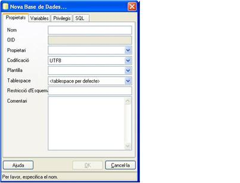

5.1 - Bases de Datos: Creación, Modificación y Eliminación
CREACIÓN
La creación la efectuaremos con la sentencia SQL:
CREATE DATABASE nombre
WITH ] [ OWNER [=] nombre_propietario ]
TEMPLATE [=] template ]
ENCODING [=] encoding ]
TABLESPACE [=] tablespace ]
CONNECTION LIMIT [=] núm_conn ] ]
En principio el propietario de la Base de Datos será quien la crea, que evidentemente habrá de tener permiso para crear (permiso de CREATEDB).
Si somos súper usuarios podremos hacer que el propietario sea otro usuario.
Cuando se crea una Base de Datos en realidad, por ir más rápido, lo que hace es copiarla de otra, una especie de plantilla. Podemos elegir esta plantilla o Base de Datos original (template1 o template0; por defecto template1).
Nota
Aunque podríamos estar tentados de utilizar la cláusula template para copiar Base de Datos nuestras (es decir, utilizar las nuestras como plantilla y así esperar que se copie bien), no es aconsejable ya que puede producirnos muchos problemas (con transacciones pendientes, ...). Para copiar las tablas y contenidos, ya veremos los comandos oportunos en el apartado Copia de seguridad y restauración.
La cláusula encoding servirá para especificar un conjunto de caracteres. La lista es larga, aunque parece que la cosa va decantándose por UTF-8. por lo menos así lo aconseja PostgreSQL.
Podemos especificar en cuál Tablespace se guardará la Base de Datos y sus objetos (a no ser a que digamos lo contrario). Veremos los Tablespaces a continuación.
Por último podemos decir cuántas conexiones concurrentes se pueden hacer a la presente B.D.
Por defecto (-1) no hay límite.
También lo podemos hacer con las utilidades proporcionadas por PostgreSQL, y con una sesión de un usuario de S.O. que coincida con un usuario de PostgreSQL y que tenga permiso para crear B.D.
createdb [ opciones] nombre
Las opciones correspondientes a las de la sentencia SQL son
-O (owner) -T (template) -E (encoding) -D (tablespace)
Aparte tendrá otros (como viéramos con createuser) para especificar el HOST, o pedir contraseña, ...
Desde PgAdmin

Como se puede comprobar tenemos las mismas opciones.
MODIFICACIÓN
La sentencia ALTER DATABASE permite reconfigurar la Base de Datos, variante los parámetros, o renombrarla.
ELIMINACIÓN
Para borrar una Base de Datos utilizaremos la sentencia SQL DROP DATABASE, o la utilidad dropdb.